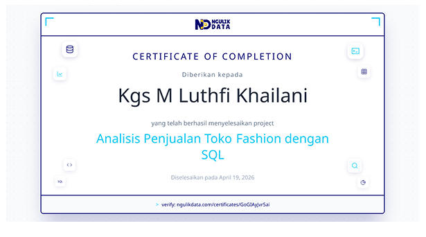

Tools & Skills
Here are the essential tools and skills I use to analyze data and drive business insights


Hi, I'm Kgs M Luthfi Khailani, an aspiring Data Analyst currently building my portfolio website. I am passionate about analyzing data, uncovering patterns, and creating visualizations to support data-driven decision making.
Download CVHere are the essential tools and skills I use to analyze data and drive business insights
Key competencies that define my expertise in data analysis and visualization
Python is one of the main tools I use for data analysis, including data cleaning, manipulation, and visualization. I utilize libraries such as Pandas, Matplotlib, Seaborn and Plotly to explore datasets and generate insights.
SQL is essential for querying and managing data from relational databases. I use SQL to extract, transform, and analyze data through joins, aggregations, and filtering to support data-driven decisions.

I use Looker Studio to build interactive dashboards and visual reports that help present data insights clearly and support better decision-making.
Power BI allows me to create interactive dashboards and reports, enabling real-time insights and helping stakeholders understand key metrics effectively.
I use Excel for data analysis tasks such as data cleaning, pivot tables, and basic statistical analysis to quickly explore and summarize datasets.
Professional experiences and organizational activities
Assisted in analyzing operational and business data to support reporting and decision-making processes. Worked on data cleaning, visualization, and dashboard development using Excel, SQL, and Power BI to improve reporting efficiency and deliver actionable insights.
Managed and validated data for more than 8,900 new students while organizing student information into over 150 operational groups to improve coordination efficiency during PKKMB UNSRI 2024. Also coordinated IT systems and data flow throughout the event to ensure smooth technical operations and minimize disruptions.
Developed interactive web interfaces focused on structured data presentation and accessibility while improving user experience through optimized layouts and efficient data flow. Collaborated with cross-functional teams to support better user interaction and engagement during the event.
Data analysis projects showcasing my skills and impact

Analyzed iPhone SE 2022 sales performance in Indonesia (2023–2025) using Power BI. Built an interactive dashboard to explore sales trends, regional performance, and customer segmentation, providing insights to support data-driven business decisions.

Analyzed customer data to understand purchasing behavior and customer segmentation. Developed an interactive dashboard in Looker Studio to highlight key insights, helping identify patterns and support targeted marketing strategies.
Interactive dashboard reports built with Power BI and Google Looker Studio
Analyzed iPhone SE 2022 sales performance in Indonesia from 2023 to 2025 using Power BI, covering sales trends, regional performance, profit, customer segmentation, and payment methods.
Let's check it →Built an interactive Google Looker Studio dashboard to analyze credit card customer behavior, transaction volume, satisfaction score, education, occupation, expenses, and customer segmentation.
Let's check it →Designed a Google Looker Studio dashboard for e-commerce transaction data, including revenue, profit, discount, quantity, sales trends, payment methods, product categories, and customer summaries.
Let's check it →Professional certifications, bootcamps, and achievements supporting my journey in Data Analytics and Technology.
National professional certification validating competencies in data analysis, data interpretation, reporting, and analytical problem-solving based on industry standards.
Intensive data analyst training covering data cleaning, exploratory data analysis, dashboard development, and business insight generation using modern analytical tools.
Learned data analysis workflows using Python and SQL, including data manipulation, querying, visualization, and analytical techniques for business data processing.
Studied data engineering fundamentals including ETL pipelines, data architecture, database systems, and scalable data processing workflows from beginner to advanced level.

Performed SQL-based sales analysis on fashion retail datasets, focusing on transaction trends, customer behavior, revenue insights, and data-driven business decisions.
Learned Python fundamentals for data analysis including data cleaning, manipulation, visualization, and exploratory data analysis using libraries such as Pandas and NumPy.